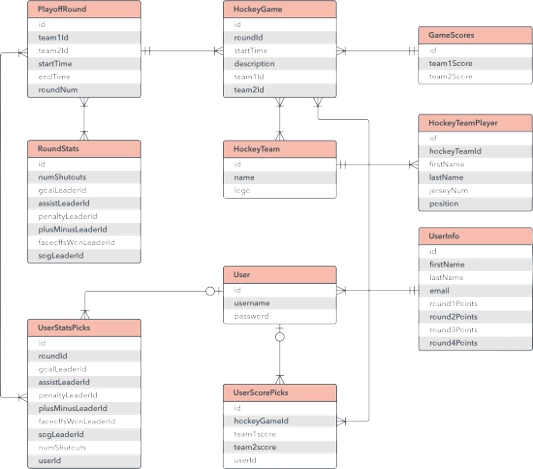

ERD ehk Entity Relationship Diagram on vooskeemi tüüp, mis illustreerib kuidas entiteedid, objektid või konseptsioonid omavahel seonduvad. Seda ksutatakse andmebaaside kavandamiseks, äriinfosüsteemides, hariduses ja teadustöös. ERD-d kasutavad sümboleid nagu ristkülikud, rombid, ovaalid ja jooned. 
Peter Chen (tuntud ka kui Peter Pin-Shan Chen), Carnegie-Melloni Ülikooli õppejõud Pittsburghis, on ER-mudeli arendaja andmebaasi kavandamise jaoks 1970. aastatel. Asjade omavahelise seotuse kujutamine ulatub vähemalt antiik-Kreekasse, Aristotelese, Sokratese ja Platoni töödesse. Hiljuti nähti seda ka 19. ja 20. sajandi filosoofia-loogikute nagu Charles Sanders Peirce'i ja Gottlob Frege'i töödes. 1970. aastatel töötasid Charles Bachman ja A.P.G. Brown tihedalt Peter Cheni lähenemise eelkäijatega. Bachman arendas välja Bachman Diagrammi tüüpi andmestruktuuri diagrammi, mis on tema järgi nime saanud.
Andmebaasi kavandamine: ER-diagramme kasutatakse seotud andmebaaside kavandamiseks ja nõuete määramiseks. Need aitavad loogika ja ärireeglite selgitamisel ning tehnoloogia rakendamisel.
Andmebaasi tõrkeotsing: ER-diagramme kasutatakse olemasolevate andmebaaside analüüsimiseks ja probleemide lahendamiseks.
Äriinfosisustemid: Diagramme kasutatakse äriprotsessides kasutatavate andmebaaside kavandamiseks või analüüsimiseks. See võib protsesse optimeerida ja info kättesaadavust parandada.
Äriprotsesside ümberkujundamine (BPR): ER-diagrammid aitavad analüüsida äriprotsesside ümberkujundamisel kasutatavaid andmebaase ja uue andmebaasi seadistuse modelleerimisel.
Haridus: ER-diagrammid aitavad planeerida andmebaase hariduslikel eesmärkidel, mis võimaldavad struktureeritud teabe salvestamist ja taastamist.
Teadustöö: ER-diagrammid mängivad võtmerolli kasulike andmebaaside seadistamisel, mis aitavad analüüsida struktureeritud teadusandmeid.